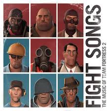
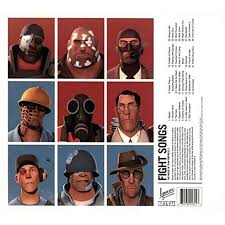

Lanzado en 2017 por Valve y Ipecac Recordings, Fight Songs recopila la legendaria música de Team Fortress 2 compuesta por Mike Morasky e interpretada por la Valve Studio Orchestra. El álbum combina de manera perfecta el jazz clásico de espías, marchas militares y ritmos acelerados de acción que capturan la esencia caótica y el carisma de los 9 mercenarios en el campo de batalla.